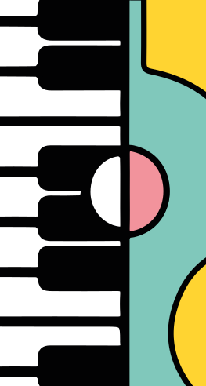

Liedjes met Liza
Muziekplezier voor kinderen van 1 tot 4 samen met hun (groot)ouder. Het samen genieten en plezier maken staat voorop. In een cursus van 8 weken leren jij en je kind leuke nieuwe (en oude) liedjes zingen. Ook zullen er instrumenten voorbij komen, en gaan we lekker dansen, bewegen en ontdekken.
Muziek op schoot
Muziek op Schoot is speciaal voor kinderen van 1 tot 4 jaar, samen met hun (groot)ouders. In deze cursus van 11 lessen vormen liedjes en spreekteksten het uitgangspunt voor allerlei activiteiten die in de belevingswereld van het kind passen. We gebruiken instrumenten en materialen die geschikt zijn voor de leeftijd van het kind.
Notenkrakers / AMV
Notenkrakers 1
Spelen met muziek is de beste muzikale kennismaking die er is! Het ontdekken van muziek en het plezier
dat je ermee kunt hebben staat centraal in deze cursus. Op speelse manier gaan de kinderen aan de slag
met nieuwe liedjes, bewegen op muziek en het bespelen van verschillende instrumenten. Onze docent Meike
laat je kennis maken met verschillende instrumenten.
Tijdens de lessen volgen we thema’s als de seizoenen, dieren en kleuren. En zo is elk blok weer anders
en kan je een geheel jaar AMV* volgen.
Op een speelse manier behandelen we muzikale tegenstellingen als hard & zacht, snel & langzaam en hoog &
laag.
Notenkrakers 2
Bij dit vervolg op Notenkrakers 1 gaan we verder aan de slag met zingen, bewegen, luisteren en dansen.
We werken met kleine percussie instrumenten. En ook komen de andere instrumenten uiteraard weer aan bod,
waar je een hele boel over te weten komt!
Ook in deze groep staan natuurlijk het ontdekken van muziek en het plezier dat je ermee kunt hebben
voorop.